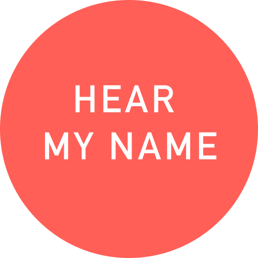
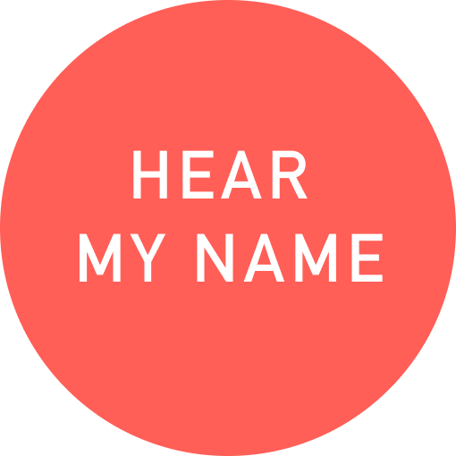

What is your Chinese name?
吕 诗彤 Lyu Shitong
What does your name mean?
诗 (shi) means poem/poetic, 彤 (tong) means red/sunlight. Also, my Mother’s family name is 师 (shi), which is pronounced the same as 诗 (shi), although this is not intended, I am very happy that I could share my Mom’s name as well instead of just the family name from my Dad.
What is your English name? (Please write in pinyin if you don’t have one)
Sally
Who gave you your English name?
It was randomly assigned by my kindergarten teacher
Is there a pronunciation/meaning connection between your English name and Chinese name?
No
Have you ever abandoned your English name? What was the reason?
I stop using Sally in the first year of college, It was sort of strange because I was finally in an English-speaking environment and I abandoned my English name. Before, I never had problems with Sally since I feel like it is just a code name that I only use occasionally. But in college, Sally became my “primary name”, and all of a sudden I realized that I am not Sally and probably never should be.
Does your name ever give you any funny, embarrassing, or uncomfortable experiences?
There was one time I tried to purchase a new Airpod, and you know Apple does offer the engraving service, I figured that it would be nice to have my name on it in case I lost it. So on that customization page, I typed in “Shitong”, then a message pops up saying it contains “inappropriate words.” It took me a second to realize apple probably only recognizes “Shit” in my name. And I was like...not sure how to react, I kinda found it funny, in a very sarcastic way. My name means poems, red, and radiant sun, and all this stupid AI sees is shit.
Do you prefer your Chinese name or your English name? Which name better represents your own identity?
I love my Chinese name. But to be honest I prefer my name to just be Shitong without my surname. Chinese people, especially elder men, usually have an immense attachment to their surnames, they are desperate to carry on their family name. Some people would force the female members of their family to keep having children until a boy is born. To me, my family name is far less precious than the name my parents gave me. I have no interest in passing it on and apparently, I can’t since I am a girl lol. I also don’t think it is fair regarding the fact that my Mom gave birth to me and I have to take my father’s surname and become a part of the Lyu clan. I don’t want to, I wish my name could just be Shitong, no more no less, just Shitong.